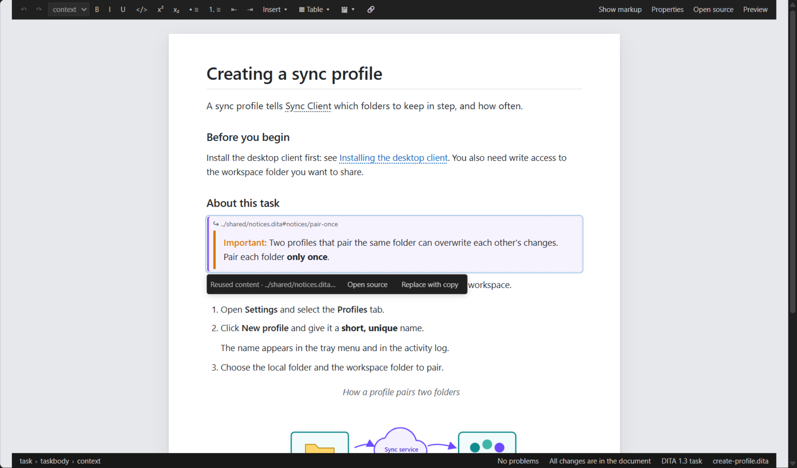

Reused Content, Keys and Link Titles
The visual editor shows reused content, keys' texts, link targets' titles and keyed images resolved on the page, as your output will show them — and lets you open the source of reused content or make a local copy of it.
Reused Content
An element reused with conref or conkeyref shows in
a box: the reference above, then the reused content as the preview renders it — keys,
conrefend ranges, reuse inside reused content and images
resolved. It is read only, and follows changes in the reused file, saved or not. Reuse
that cannot be resolved (a missing file, element or key) says why.
Click the box: a bar offers two actions.

- Open source
- Opens the reused element in its own file, at the element.
- Replace with copy
- Replaces the reference with a copy of what it reuses, to change it in this topic only. Ctrl+Z on the page puts the reference back.
The copy is what DITA's conref resolution gives: the element keeps its own attributes
and takes the reused element's other attributes (not its @id); a
conrefend range becomes every element of the range. Relative
references in the copy are rewritten so they still point to the same files, and an
@id the topic already uses is dropped.
Keys, Link Titles and Keyed Images
- A phrase given by a key (
<keyword keyref="product-name"/>) shows the key's text, with a dotted underline. - An empty link (
<xref href="…"/>or<xref keyref="…"/>) shows its target's title. - An image given by a key shows the file the key points to.
Hover them to see where they come from. They follow changes to the target, its title or
the maps. A key that is not defined, or a target that cannot be found, shows
[key] or the address, marked, with the reason on hover.
keyref and empty links exactly as they are.